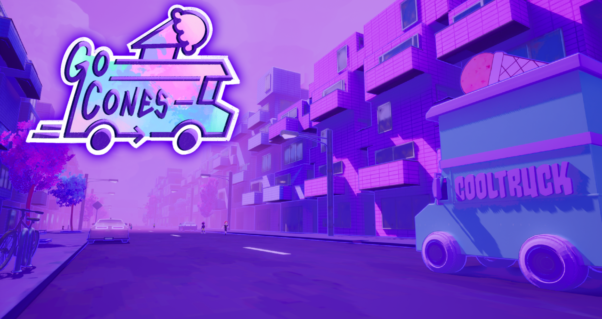
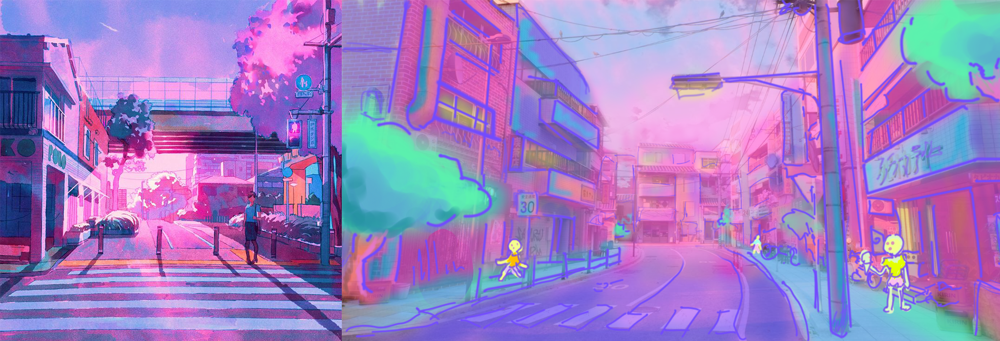
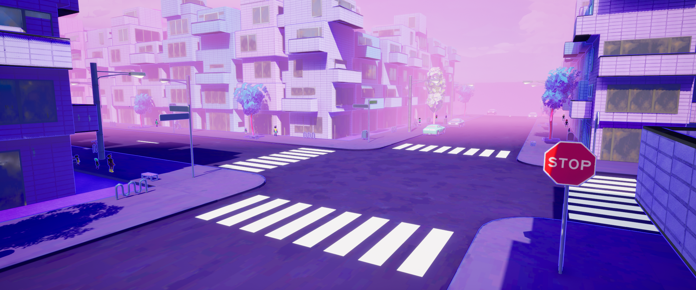
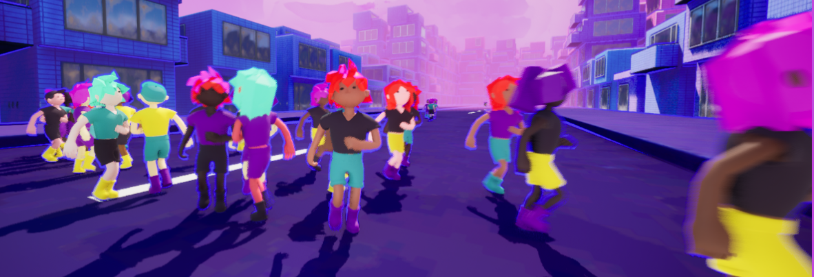
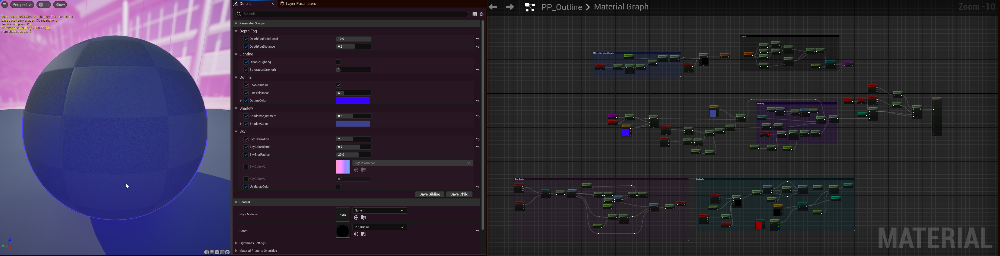

GoCones
Category: Game Development |
Date: August 2024 - December 2024 |
Platform: PC

Overview
An ice cream truck simulator - drive your ice cream truck around an infinitely generating city, sell ice cream, get rich... and try (not?) to run over all your customers o.O
This game was created in Unreal Engine 5 with a team of 7 over 3 months.
My roles on this project: Game Director, Art Director, Technical Artist
lectroblob.itch.io/gocones
Awards
SJSU Game Dev Club Jam Fall 2024: Best Game of the Semester, Best 3D Art
SJSU Computer Graphics Jam Fall 2024: First Place
The Idea
The initial idea for this game came to me when imagining all the possibilities of things I could learn through the process of making it. I wanted to come up with an idea that we'd all be excited to jump into and learn something new from - new art style, new AI, new everything. And what I was really curious about in that moment was procedural generation, something I hadn't yet had a chance to investigate. I also had to consider that since most of our team would be preoccupied with school during the semester, I had to create a game small scoped enough that we could absolutely finish it by the end of the semester (with a long list of "if we have times" of course). The idea just randomly came to me - an ice cream simulator where the fun was in exploring all kinds of new places, selling ice cream and road tripping all over the city. A chill experience where all you had to worry about was getting rich and driving, driving, driving. The name represents what I wanted the game to be, a game about "going." So I proposed the game idea to my team, and we started our game development journey.
Art Direction
I started off this project with just a vague image in my head of what it could look like, and if I had been working alone, I probably would have just ran with that. There's so many things I didn't even think about before taking on the role of art director. Every question my team asked introduced a new workflow for trying to communicate this vision in my head into a tangible reality for them. A vague idea became a little sketch, became a mood board with a color palette, followed by reference gathering, drawovers, more reference gathering.... What was once a vague idea had become this beautiful collaborated concept that, although adjacent to my original idea, was something so much more.

The primary reference we decided to work from was Kat Tsai's "Sakura" (left). The dreamlike combination of pinks, purples and blues with the sense of what lies ahead in the distance was exactly what I wanted to achieve with the art direction. I drafted up a quick drawover (right) at the beginning of our process to show my team what I was envisioning our final game looking like: heavy atmospheric perspective, a soft feeling of pink and purple, hints of greens and blues, Japanese architecture, and a bit of a purple outline shader for a touch of that fun 2D feel, overall leading to a feeling of this peaceful, calming city street that you could drive through forever.
Procedural Generation
The basis of this game was built on my desire to learn procedural generation. I wanted to create a game where it felt like you could just drive forever into the horizon... because you could. And so we did.

Our chunk generation system was designed to be a 3x3 grid, with the player's truck in the center chunk. Whenever the player enters a new chunk, the previous chunks are deleted and new ones spawn to make the truck in the center chunk once again. We decided to forgo the ability to save past areas because it was not important to the gameplay, and instead have infinite generation and exploration of new areas. The chunk generation system was implemented by our tech artist Mikyle.

The road generation system utilizes that 3x3 grid to create infinitely connecting generating roads with no dead ends. This was so that the player could always keep driving in any direction and never be forced to turn around. The first chunk loaded is assigned 4 random values (0 or 1) to determine whether a road spawns on that edge or not. Two of the four edges must have a road so that there are no dead ends. Every chunk that spawns first checks adjacent chunks to match their edge value (0 or 1) and randomly generate the other edges based on the constraints. This results in roads that generate infinitely and never dead end. The roads then use splines to generate the meshes.

Then, the rest of the city generation: using the splines, I used the offset and tangents of the points to determine the placement and rotation for all kinds of city props: mailboxes, bike racks, fire hydrants, street lamps, planter boxes, street signs, parked cars, etc. This same system was also used to place little road decals in appropriate places, such as the road lines in the center of the road and the crosswalks at some intersections. The props give the city a sense of life to work towards that immersive experience. The placement system was also used to spawn customers on the sidewalks, although they still like to walk in the middle of the street right in front of the truck because they're very intelligent.
Customer Generation

Next, the customer generation: our modeler created a bunch of hair variations for us to use, as well as a male and female model. When each customer spawns, the blueprint first selects the base mesh (male or female) and then chooses a random hairstyle of the chosen model, then picks a random color for the hair, skin, shirt, pants, and shoes. At spawn, they also inherit a weighted bool demand variable for whether they want ice cream or not based on the region's demand. Their locations are randomly placed on the sidewalks per chunk and they spawn with a favorite ice cream flavor that they will ask for when they come up to the truck. All of the customers feel unique, and the fun colors add to the happy, chill vibe when driving around!
Post Process Shader
The shader is my favorite thing I worked on for this project. The shader has parameters to change the depth fog, color of the sky, softness of the clouds, the outline (whether it exists, how thick it is, what color it is), saturation boosting, and adjusting the color of the shadows.

The outline is created using a Laplacian filter and applying the outline where there is a difference in depth (originally it checked normals differences too, but we decided the outline had become too heavy handed). The sky effect is created using a Kuwahara filter only on the default Unreal sky, an effect I discovered by accident when messing with the filter and completely fell in love with - I could just watch the sky drift by for ages. The shadow filter lerps between a bluer tint based on the darkness of the shadow to add more color in the shadows and push the effect of purple and blue in the scene. The depth fog takes in the color of the sky and fades the scene to that sky color based on user parameters to add a heavy sense of depth, and the saturation booster gives any scene a more vibrant feel, really helping us to push the pinks and purples.
Random Development Stuff

Other Programming Stuff

Developed region system for region-based supply/demand system
Created minimap that updates with player and truck location & highlights new regions
Added ability to change flavors to custom flavors and names
Added ice cream hotbar with updating inventory and colors
Implemented death and money counters
Added a vertex shader for fun that makes the customers a bit fatter after getting ice cream o.O
Created shader custom depth that allows you to see the customers through objects for ease of search
Created trees for the planterboxes (see HappyTrees project)
Game Credits
Director: Endlessette Osborn
Programmers: Hoang Nguyen, Mikyle Mosquera, Endlessette Osborn
3D Artists: Phuong Truong, Nathaniel Zapata
Technical Artists: Mikyle Mosquera, Endlessette Osborn
Sound Design: Bryan Nguyen
UI Artist: Adora Vu
Other Contributors: Steven Vu, Sahana Ilenchezhian
lectroblob.itch.io/gocones